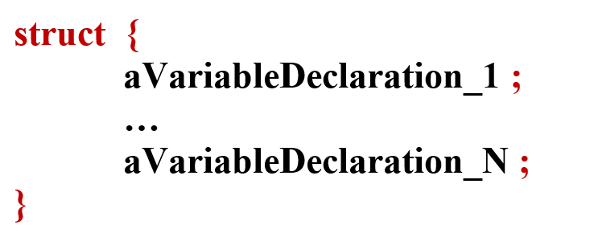
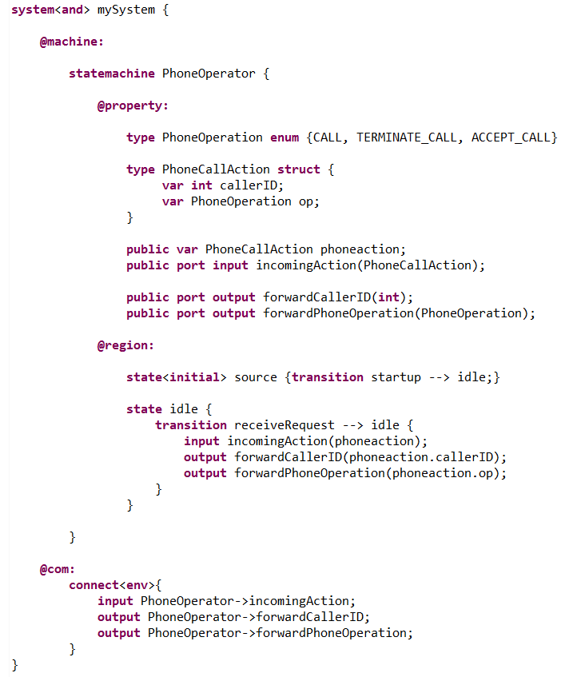
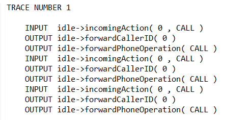
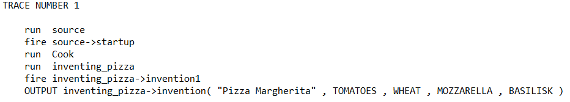

They are standard record types.
The general syntax is the following (see BNF syntax) :
In the following example, we define a statemachine that receives structured objects and that analyze and forward their contents. In the code, we can see that we can access elements of the structure through their name with : "structurename.elementname".
The textual trace of a symbolic exploration ascertain the correspondence between the input phoneaction and the forwarded output :
In the following example, we'll see how to initialize values for "struct" type variables and how to modify such a variable.
The code in the following (see comments for syntax) :

As expected, we get the following trace :
